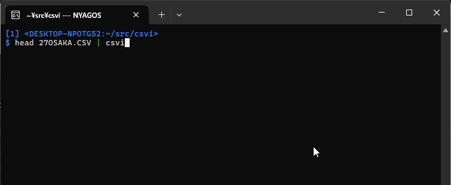

"CSVI" - Terminal CSV Editor


( <English> / <Japanese> )
CSVI is a terminal-based CSV editor for UNIX-like systems and Windows.
Key Features
-
Minimal changes on save
CSVI keeps the original formatting for every unmodified cell: quotes, line endings (LF/CRLF), BOM, encoding, and field/record separators.
Only actual edits are saved—making it ideal for clean diffs and safe edits to production data. -
vi-style and Emacs-style keybindings
Move the cursor like in vi, and edit cells like in Emacs. -
Reads from both file and standard input
You can pipe CSV data into CSVI or open a file directly. -
Fast startup and background loading
Opens large files quickly without blocking the interface. -
Visual feedback for edits
Modified cells are underlined.
Pressuto undo a cell's change and restore its original value. -
Shows original format details
The bottom line of the screen shows technical info: quoting, encoding, field separators, and more—just as they appeared in the original file. -
Flexible encoding support
- UTF-8 (default)
- UTF-16
- Current Windows code page (auto-detected)
- Any encoding from the IANA registry using
-iana NAME
-
Color scheme options
- Default colors assume a dark background.
- Use
-rvfor light backgrounds, or setNO_COLORto disable color output (https://no-color.org/ )

Video by @emisjerry
Install
Manual Installation
Download the binary package from Releases and extract the executable.
⚠️ Note: The macOS build is experimental and not yet tested. Please let us know if you encounter any issues!
Use "go install" (requires Go toolchain)
go install github.com/hymkor/csvi/cmd/csvi@latest
Use eget installer (cross-platform)"
cd (YOUR-BIN-DIRECTORY)
eget hymkor/csvi
Use scoop-installer (Windows only)
scoop install https://raw.githubusercontent.com/hymkor/csvi/master/csvi.json
or
scoop bucket add hymkor https://github.com/hymkor/scoop-bucket
scoop install csvi
Usage
$ csvi {options} FILENAME(...)
or
$ cat FILENAME | csvi {options}
Options
-helpthis help-h intthe number of fixed header lines-cuse Comma as field-separator (default when suffix is.csv)-tuse TAB as field-separator (default when suffix is not.csv)-semicolonuse Semicolon as field-separator-iana stringIANA-registered-name to decode/encode NonUTF8 text-16beForce read/write as UTF-16BE-16leForce read/write as UTF-16LE-auto stringauto pilot (for testcode)-nonutf8do not judge as UTF-8-w widthsset the widths of cells (e.g.,-w 14,0:10,1:20to set the first column to 10 characters wide, the second column to 20 characters wide, and all others to 14 characters wide)-fixcolforbid insertion or deletion of cells (disablesi,a, and some ofd-prefixed deletion commands)-pProtect the header line-readonlyRead Only Mode-rvEnable reverse-video display (invert foreground and background colors)-ofs stringString used as the separator between cells in the output
Key-binding
- Move Cursor
h,←,Shift+TAB(move cursor left)j,Ctrl+N,↓,Enter(move cursor down)k,Ctrl+P,↑(move cursor up)l,→,TAB(move cursor right)<,gg(move to the beginning of file)>,G(move to the end of file)0,^,Ctrl+A(move to the beginning of the current line)$,Ctrl+E(move to the end of the current line)PgUp,Ctrl+B(move up one page)PgDn,Ctrl+F(move down one page)
- Search
/(search forward for a partial match)?(search backward for a partial match)n(repeat the previous search forward)N(repeat the previous search backward)*(search forward for the next cell that exactly matches the current one)#(search backward for the previous cell that exactly matches the current one)
- Edit
i(insert a new cell before the current one)a(append a new cell after the current one)r(replace the current cell)x(clear the current cell)dl,d+SPACE,d+TAB,dv(delete cell and shift cells on the right)dd,dr,D(delete the current line)dc,d|(delete the current column)w(write to a file or STDOUT('-'))o(append a new line after the current one)O(insert a new line before the current one)"(enclose or remove double quotations if possible)u(restore the original value of the current cell)yl,y+SPACE,y+TAB,yv(copy the values of the current cell to kill-buffer)yy,yr,Y(copy the values of the current row to kill-buffer)yc,y|(copy the values of the current column to kill-buffer)p(paste the values of kill-buffer after the current cell, row or column)P(paste the values of kill-buffer before the current cell, row or column)ALT+p,ESC+p(overwrite the current cell/row/column with the content of the kill-buffer)
- Display settings
L(reload the file using a specified encoding)Ctrl+L(Repaint)](widen the column at the cursor)[(narrow the column at the cursor)
- Quit:
qorESC+q
Environment Variables
NO_COLOR
If the environment variable NO_COLOR is set to any value with at least one character,
csvi disables colored output.
This follows the standard proposed by NO_COLOR.
RUNEWIDTH_EASTASIAN
Specifies the display width for Unicode characters classified as ambiguous width.
- Double-width:
set RUNEWIDTH_EASTASIAN=1 - Single-width:
set RUNEWIDTH_EASTASIAN=0(any non-1value with at least one character is also valid)
COLORFGBG
When the environment variable is defined in the form (FG);(BG) and the foreground (FG) is less than the background (BG),
csvi automatically uses color settings suitable for light backgrounds (equivalent to the -rv option).
csvi normally uses the terminal's default colors via the escape sequences ESC[39m and ESC[49m.
Thus, the (FG);(BG) values are not directly applied; they are only used to determine whether gray background lines should be adjusted toward light or dark shades.
GOREADLINESKK
When the environment variable GOREADLINESKK specifies dictionary files,
the built-in SKK1 Kana-to-Kanji conversion via go-readline-skk is enabled.
-
Windows
set GOREADLINESKK=SYSTEMJISYOPATH1;SYSTEMJISYOPATH2...;user=USERJISYOPATH- Example:
set GOREADLINESKK=~/Share/Etc/SKK-JISYO.L;~/Share/Etc/SKK-JISYO.emoji;user=~/.go-skk-jisyo
-
Linux
export GOREADLINESKK=SYSTEMJISYOPATH1:SYSTEMJISYOPATH2...:user=USERJISYOPATH
(Note: ~ is automatically expanded to %USERPROFILE% on Windows, even in cmd.exe.)
Use as a Go package
package main
import (
"fmt"
"os"
"strings"
"github.com/mattn/go-colorable"
"github.com/hymkor/csvi"
"github.com/hymkor/csvi/uncsv"
)
func main() {
source := `A,B,C,D
"A1","B1","C1","D1"
"A2","B2","C2","D2"`
cfg := &csvi.Config{
Mode: &uncsv.Mode{Comma: ','},
}
result, err := cfg.Edit(strings.NewReader(source), colorable.NewColorableStdout())
if err != nil {
fmt.Fprintln(os.Stderr, err.Error())
os.Exit(1)
}
// // env GOEXPERIMENT=rangefunc go run example
// for row := range result.Each {
// os.Stdout.Write(row.Rebuild(cfg.Mode))
// }
result.Each(func(row *uncsv.Row) bool {
os.Stdout.Write(row.Rebuild(cfg.Mode))
return true
})
}
Release Note
Acknowledgements
- sergeevabc (Aleksandr Sergeev)
- kevin-gwyrdh (Kevin)
- emisjerry (emisjerry)
- rinodrops (Rino)
- toolleeo
- wumfi
Author
-
Simple Kana to Kanji conversion program. One of the Japanese input method editors. ↩︎